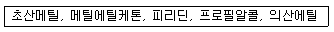
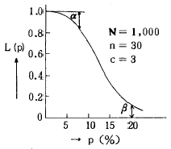
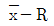

위험물기능장 (2003-03-30 기출문제)
1과목: 임의구분
1. 산화프로필렌의 성질로서 가장 옳은 것은?
- 산, 알칼리 또는 구리(Cu), 마그네슘(Mg)의 촉매에서 중합 반응을 한다.
- 물 속에서 분해하여 에탄(C2H6)을 발생 한다.
- 폭발범위가 4 - 57 % 이다.
- 물에 녹기 힘들며 흡열 반응을 한다.
(정답률: 73%)

2. 제 4류 위험물의 발생증기와 비교하여 시안화수소(HCN)가 갖는 대표적인 특징은?
- 물에 녹기 쉽다.
- 물 보다 무겁다.
- 증기는 공기보다 가볍다.
- 인화성이 높다.
(정답률: 71%)
3. 트리니트로 톨루엔의 위험성에 대한 설명으로 옳지 않은 것은?
- 폭발력이 강하다.
- 물에는 불용이며 아세톤, 벤젠에는 잘 녹는다.
- 햇빛에 변색되고 이는 폭발성을 증가 시킨다.
- 중금속과 반응하지 않는다.
(정답률: 42%)
4. 다음 위험물의 공통된 특징은?

- 수용성
- 지용성
- 금수성
- 불용성
(정답률: 70%)
5. 물과 서로 분리 가능하여 물 속에서 쉽게 구별할 수 있는 알코올은?
- n-부틸알코올
- n-프로필알코올
- 에틸알코올
- 메틸알코올
(정답률: 60%)
6. 에테르가 공기와 오랫동안 접촉하든지 햇빛에 쪼이게 될 때 생성되는 것은?
- 에스테르(ester)
- 케톤(ketone)
- 불변
- 과산화물
(정답률: 64%)
7. 은백색의 연하고 광택나는 금속으로 알코올과 접촉했을 때 생성하는 물질은?
- C2H5ONa
- CO2
- Na2O2
- Aℓ2O3
(정답률: 57%)
8. 산화성고체 위험물이 아닌 것은?
- NaClO3
- AgNO3
- MgO2
- HClO4
(정답률: 89%)
9. H2O2는 농도가 일정 이상으로 높을 때 단독으로 폭발한다 몇 % (중량) 이상일 때 인가?
- 30％
- 40％
- 50％
- 60％
(정답률: 81%)
10. 다음 중 가장 강한 산은?
- HCℓO4
- HCℓO3
- HCℓO2
- HCℓO
(정답률: 91%)
11. 유기과산화물의 액체가 누출되었을 때 처리방법으로 가장 옳은 것은?
- 중화제로 흡수하고 제거 한다.
- 물 걸래로 즉시 깨끗이 닦는다.
- 마른모래로 흡수하고 제거 한다.
- 팽창질석 또는 팽창진주암으로 흡수하고 제거 한다.
(정답률: 61%)
12. 위험물을 옥내저장소에 저장할 경우 용기에 수납하고 품명별로 구분 저장하고, 위험물의 품명별마다 몇 m 이상의 간격을 두어야 하는가?
- 0.2m 이상
- 0.3m 이상
- 0.5m 이상
- 0.6m 이상
(정답률: 41%)
13. 2 품목 이상의 위험물을 동일 장소에 저장할 경우 환산 지정 수량으로 옳은 것은?
- 각 품목별로 저장하는 수량을 각 품목의 지정수량으로 나누어 합한수
- 각 품목별로 저장하는 수량을 각 품목의 지정수량으로 나누어 곱한수
- 저장하는 위험물 중 그 양이 가장 많은 품목을 지정수량으로 나눈수
- 저장하는 위험물 중 그 위험도가 가장 큰 품목을지정수량으로 나눈수
(정답률: 82%)
14. 소화설비의 소요단위 계산법으로 옳은 것은?
- 건물외벽이 내화구조일 때 1000m2 당 1 소요단위
- 저장소용 외벽이 내화구조일 때 500m2 당 1소요단위
- 위험물지정수량당 1소요단위
- 위험물지정수량의 10배를 1소요단위
(정답률: 82%)
15. 물분무 소화설비가 적용되지 않는 위험물은?
- 동식물류
- 알칼리금속과산화물
- 황산
- 질산에스테르류
(정답률: 72%)
16. 화학포를 만들 때 쓰이는 기포안정제가 아닌 것은?
- 사포닝
- 가수분해 단백질
- 계면 활성제
- 염분
(정답률: 72%)
17. 인화성액체 위험물 화재 시 소화방법으로서 옳지 않은 것은?
- 화학포에 의해 소화 할 수 있다.
- 수용성액체는 기계포가 적당 하다.
- 이산화탄소 소화도 사용 된다.
- 주수소화는 적당하지 않다.
(정답률: 64%)
18. 화재발생을 통보하는 경보설비에 해당 되지 않는 것은?
- 자동식사이렌설비
- 누전경보기
- 비상콘센트설비
- 가스누설경보기
(정답률: 82%)
19. 위험물 안전관리자를 해임한 날부터 몇 일 이내에 위험물 안전관리자를 선임하여야 하는가?
- 5일
- 15일
- 25일
- 30일
(정답률: 86%)
20. 다음 위험물질 중 물보다 가벼운 것은?
- 에테르, 이황화탄소
- 벤젠, 포름산
- 아세트산, 가솔린
- 퓨젤유, 에탄올
(정답률: 64%)
2과목: 임의구분
21. 다음 유지류 중 요오드값이 가장 큰 것은?
- 돼지기름
- 고래기름
- 소기름
- 정어리기름
(정답률: 89%)
22. 다음 위험물 중 특수인화물에 속하는 것은?
- C2H5OC2H5
- CH3COCH3
- C6H6
- C6H5CH3
(정답률: 80%)
23. 카바이트의 위험성으로 옳지 않은 것은?
- 폭발범위가 2.5 - 81% 로 넓어 폭발하기 쉽고 착화온도가 335℃로 낮다.
- 아세틸렌을 2kg/cm2 이상 가압하면 중합폭발을 일으킨다.
- 시판품은 불순물(S, P, N2)을 포함하므로 유독한가스를 발생시켜 악취가 난다.
- 구리와 반응하여 폭발성의 아세틸렌화구리(CuC2)를 만든다.
(정답률: 39%)
24. 상온, 상압에서 과염소산칼륨이 다음 물질과 혼합되어 있을 때 습기 및 일광에 의하여 발화하는 물질이 아닌 것은?
- 황
- 인
- 목탄
- 석면
(정답률: 61%)
25. 이황화탄소의 옥외 저장탱크에 대한 설명으로 옳은 것은?
- 바닥의 두께 0.2m 이상의 벽과 바닥이 새지 아니하는 철근 콘크리트조의 수조에 넣어 물속에 설치한다.
- 방유제의 높이는 0.5m 이상 3m 이하로 한다.
- 방유제내에는 물을 배출시키기 위한 배수구를 설치하고, 그 외부에는 이를 개폐하는 밸브을 설치 한다.
- 높이가 1m를 넘는 방유제의 안팎에 폭1.5m이상의 계단 등을 설치하여야 한다.
(정답률: 61%)
26. 질식소화작업은 공기 중의 산소농도를 얼마 이하로 낮추어야 하는가?
- 5-10%
- 10-15%
- 16-18%
- 16-20%
(정답률: 70%)
27. 각 소화기의 내압시험 방법으로 옳지 않은 것은?
- 물소화기 - 수압시험
- 포말소화기 - 수압시험
- 산.알칼리 소화기 - 수압시험
- 증발성액체 소화기 - 수압시험
(정답률: 66%)
28. 위험물 제조소등의 설치허가 기준은?
- 일반고시
- 시∙군의 조례
- 시∙도지사
- 대통령령
(정답률: 55%)
29. 옥외 탱크저장소의 배관의 완충조치가 아닌 것은?
- 루푸조인트
- 네트워크조인트
- 볼조인트
- 후렉시블조인트
(정답률: 80%)
30. 알루미늄분의 안전관리에 대한 설명으로 옳지 않은 것은?
- 공기와 접촉 자연발화의 위험성이 크므로 화기를 엄금한다.
- 마른모래는 완전히 건조된 것으로 사용한다.
- 분진이 난무한 상태에서는 호흡보호기구를 사용한다.
- 피부에 노출 되어도 유해성이 없으므로 작업에 방해되는 고무장갑은 끼지 않는다.
(정답률: 91%)
31. 염소산칼륨의 성질에 대한 설명으로 옳은 것은?
- 가열, 마찰에 의해서 가연성 가스가 발생 한다.
- 녹는점 이상으로 가열하면 과염소산를 생성 한다.
- 수용액은 약한 산성 이다.
- 찬물, 알코올에 잘 녹는다.
(정답률: 49%)
32. 금속칼륨의 성질을 바르게 설명한 것은?
- 금속 가운데 가장 무겁다.
- 극히 산화하기 어려운 금속이다.
- 극히 화학적으로 활발한 금속이다.
- 금속 가운데 가장 경도가 센 금속이다.
(정답률: 75%)
33. 물과 반응하여 극렬히 발열하는 위험 물질은?
- 염소산나트륨
- 과산화나트륨
- 과산화수소
- 질산암모늄
(정답률: 71%)
34. 석유속에 보관하여 취급하는 물질은?
- 황린
- 금속나트륨
- 탄화칼슘
- 마그네슘분말
(정답률: 76%)
35. 위험물을 취급하는 장소에서 정전기를 유효하게 제거 할 수 있는 방법이 아닌 것은?
- 접지에 의한 방법
- 상대습도를 70% 이상으로 하는 방법
- 피뢰침을 설치하는 방법
- 공기를 이온화하는 방법
(정답률: 77%)
36. 위험물을 운반하기 위한 적재방법 중 차광성이 있는 덮개를 하여야 하는 위험물은?
- 삼산화크롬
- 과염소산
- 탄화칼슘
- 마그네슘
(정답률: 61%)
37. 알킬알루미늄(Alkyl aluminum)을 취급할 때 용기를 완전히 밀봉하고 물과 접촉을 피해야 하는 이유로 가장 옳은 것은?
- C2H6가 발생
- H2가 발생
- C2H2가 발생
- CO2가 발생
(정답률: 56%)
38. 석유판매 취급소의 저장 시설로 옳은 것은?
- 간이탱크저장소
- 옥내이동탱크저장소
- 선박탱크저장소
- 지하탱크저장소
(정답률: 76%)
39. 석유 판매취급소의 작업실 기준으로 옳지 않은 것은?
- 바닥면적은 6m2 이상 15m2 이하로 하여야 한다.
- 내화구조로 된 벽으로 구획하여야 한다.
- 출입구는 바닥으로부터 0.2m 이상의 턱을 설치하여야 한다.
- 출입구에는 갑종방화문을 설치하여야 한다.
(정답률: 74%)
40. 위험물 운반용기의 재질로 적합하지 않는 것은?
- 금속판, 유리, 플라스틱
- 플라스틱, 놋쇠, 아연판
- 합성수지, 화이버, 나무
- 폴리에틸렌, 유리, 강철판
(정답률: 62%)
3과목: 임의구분
41. 자연발화의 형태가 아닌 것은?
- 환원열에 의한 발열
- 분해열에 의한 발열
- 산화열에 의한 발열
- 흡착열에 의한 발열
(정답률: 61%)
42. 주유취급소에 캐노피를 설치하려고 할 때의 기준이 아닌 것은?
- 배관이 캐노피 내부를 통과할 경우에는 1개이상의 점검구를 설치할 것
- 캐노피 외부의 배관으로서 점검이 곤란한 장소에는 용접이음으로 할 것
- 캐노피의 면적은 주유취급 바닥면적의 2분의 1이하로 할 것
- 캐노피 외부의 배관이 일광열의 영향을 받을 우려가 있는 경우에는 단열재로 피복할 것
(정답률: 78%)
43. 소방대상물에 따라 포소화설비의 설치 기준이 다른데, 위험물 제조소에 적응하는 포 소화설비는?
- 홈헤드설비
- 고정포방출설비
- 호오스릴포설비
- 포 소화전설비
(정답률: 37%)
44. 할론 1301를 축압식 저장용기에 저장하려 할 때의 충전비는?
- 충전비 0.51 이상 0.67 미만
- 충전비 0.67 이상 2.75 미만
- 충전비 0.7 이상 1.4 이하
- 충전비 0.9 이상 1.6 이하
(정답률: 51%)
45. 감지기의 설치 기준으로 옳은 것은?
- 13 m 이상의 계단 및 경사로에는 설치하지 말 것
- 환기통이 있는 옥내에 면하는 부분에 설치할 것
- 실내 공기유입구로부터 1.5m 이상 부분에 설치할 것
- 정온식 스포트형 감지기는 사용하지 말 것
(정답률: 66%)
46. 포말 화학소방차 1대의 포말방사능력 및 포수용액비치량으로 옳은 것은?
- 2,000L/min, 비치량 10만L 이상
- 1,500L/min, 비치량 5만L 이상
- 1,000L/min, 비치량 3만L 이상
- 500L/min, 비치량 1만L 이상
(정답률: 71%)
47. 포 소화설비의 기동장치 설치 기준으로 옳지 않은 것은?
- 주차장에 설치하는 포 소화설비의 자동식 기동장치는 방사구역마다 2개 이상 설치할 것
- 직접조작 또는 원격조작에 의하여 혼합장치 등을 기동할 수 있을 것
- 2 이상의 방사구역을 가진 포 소화설비에는 방사구역을 선택할 수 있는 것으로 할 것
- 바닥으로 부터 0.8m 이상 1.5m 이하의 위치에 설치 할 것
(정답률: 57%)
48. 자체소방대의 편성 및 자체소방조직을 두어야 하는 제조소 기준으로 옳지 않은 것은?
- 지정수량 1만배이상 저장취급하는 옥외탱크저장시설
- 지정수량 3천배이상의 제4류 위험물을 저장취급하는 제조소
- 지정수량 3천배이상의 제4류 위험물을 저장취급하는 일반취급소
- 지정수량 2만배이상의 제4류 위험물을 저장취급하는 저장취급소
(정답률: 49%)
49. 산화성고체 위험물로 조해성과 부식성이 있으며 산과 반응하여 폭발성의 유독한 이산화염소를 발생시키는 위험물로 제초제. 폭약의 원료로 사용하는 물질은?
- Na2O
- KCℓO4
- NaCℓO3
- RbCℓO4
(정답률: 53%)
50. 특수가연물을 저장, 취급하는 소방대상물에 물분무 소화설비를 설치하였을 때 수원의 저수량은? (단, 바닥면적이 50제곱미터를 초과할 경우)
- 50m2×4ℓ×20분
- 50m2×8ℓ×20분
- 50m2×10ℓ×20분
- 50m2×16ℓ×20분
(정답률: 61%)
51. 특수가연물인 넝마 및 종이 조각의 지정 수량은?
- 200Kg
- 400Kg
- 1,000Kg
- 3,000Kg
(정답률: 68%)
52. 은백색의 광택성 분말로서 공기중의 습기나 수분에 의해 자연발화 및 폭발성인 물질은?
- Cu
- Fe
- Sn
- Mg
(정답률: 76%)
53. 황린이 연소될 때 생기는 흰 연기는?
- 인화수소
- 오산화인
- 인산
- 탄산가스
(정답률: 81%)
54. 위험물의 저장취급에 대한 기준으로 옳지 않은 것은?
- 제조소등에 있어 함부로 화기를 취급치 않아야 한다.
- 위험물을 보호액속에 보존하는 경우에는 당해 위험물이 노출하지 못하도록 한다.
- 위험물의 찌꺼기등은 1주 1회이상 당해 위험물의 성질에 따라 안전한 방법으로 처리한다.
- 위험물의 성질에 따라 적당한 온도 또는 습도를 유지하도록 하여야 한다.
(정답률: 83%)
55. 그림의 OC곡선을 보고 가장 올바른 내용을 나타낸 것은?

- α : 소비자 위험
- L(p) : 로트의 합격확률
- β : 생산자 위험
- 불량율 : 0.03
(정답률: 76%)
56. 품질관리 활동의 초기단계에서 가장 큰 비율로 들어가는 코스트는?
- 평가코스트
- 실패코스트
- 예방코스트
- 검사코스트
(정답률: 82%)
57. PERT/CPM에서 Network 작도시 碇은 무엇을 나타내는가?
- 단계(event)
- 명목상의 활동(dummy activity)
- 병행활동(paralleled activity)
- 최초단계(initial event)
(정답률: 60%)
58. 신제품에 가장 적합한 수요예측 방법은?
- 시계열분석
- 의견분석
- 최소자승법
- 지수평활법
(정답률: 49%)
59. 관리도에 대한 설명 내용으로 가장 관계가 먼 것은?
- 관리도는 공정의 관리만이 아니라 공정의 해석에도 이용된다.
- 관리도는 과거의 데이터의 해석에도 이용된다.
- 관리도는 표준화가 불가능한 공정에는 사용할 수 없다.
- 계량치인 경우에는

관리도가 일반적으로 이용된다.
(정답률: 68%)
60. 다음은 워크 샘플링에 대한 설명이다. 틀린 것은?
- 관측대상의 작업을 모집단으로 하고 임의의 시점에서 작업내용을 샘플로 한다.
- 업무나 활동의 비율을 알 수 있다.
- 기초이론은 확률이다.
- 한 사람의 관측자가 1인 또는 1대의 기계만을 측정한다.
(정답률: 69%)